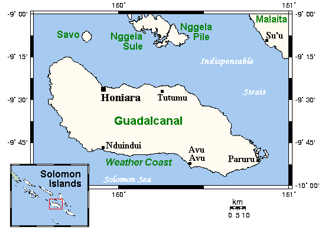

After the war was declared on Japan by the United States, soldiers were shipped to Japan to fight. Japan had very dense jungles that US soldiers had to fight in during WWII. War and fighting are never good in the first place, but when you add in a vast unknown location, it only gets more dangerous. As stated, these jungles were very dense meaning you could lose your sense of direction stepping even 10 feet into the jungle. The jungles were also typically very hot and muggy. This meant soldiers got infections and sickness due to wet clothing. Dehydration was also a huge problem since the water was also limited, soldiers typically rationed out the water they had so it lasted for the duration of their mission. One specific battle fought in the jungle terrain was the Battle of Guadalcanal. Guadalcanal is located in the Solomon Islands. Guadalcanal was of course a jungle region and had an area of about 2,500 miles.
Japan was stationed on this island during the early 1940s. They were construing bases, airfields, and everything they needed to stay in the war and stay at this location. The battle began in August, it was more of a 6-month operation to take Guadalcanal from the axis powers, specifically Japan. On August 7th, 1942, the United States launched an attack to seize the power of this region, which deemed to be successful. This event was similar to Pearl Harbor in the sense that it was a surprise attack on Japan. This attack was also the first time the allied powers won a battle in the Pacific which shaped the rest of the war. The Japanese were able to rebound quickly and by August 9th, 3 US destroyers were sunk by the Japanese. This was known as the Battle of Savo Island. Over the course of the next 3 months, there were many battles fought in the area of Guadalcanal. Both sides took many losses and eventually withdrew soldiers and battle vessels like destroyers and aircraft carriers. The area calmed down.
The ending of the Guadalcanal Campaign began in mid-November of 1942. Both the US and Japan decided to reenter the area at roughly the same time, the United States had a bit of an advantage. Upon spotting the entrance of the Japanese, the US sent destroyers to protect valuable cargo and deflect them. The Japanese were still strong and put up a good fight, but the battle ended in the favor of the United States. As with the other times, there were other small battles fought during this main one. many of which occurred on land to secure places like airfields. The US sent in more reinforcements that by December, the battles were winding down. By the new year, about in February, much of the Japanese still stationed on the island were evacuated and Guadalcanal was finally in control by the Allies.
During these 6 months, the Japanese lost a lot more soldiers than the US. Around 24,000 Japanese soldiers sadly lost their lives. Around 1,600 Americans lost their lives as well, and about 4,000 were wounded. Not only was there a loss of life, but both sides also lost many battleships, submarines, and other naval vessels.